Using Unreal Engine and LychSim on Linux Server#
Set Up WSL for Local Testing#
Install and enable WSL 1. Following the official documentation to set up WSL. In this tutorial, we prefer WSL 1 because of a discrepancy in network access between WSL 1 and WSL 2. Read more here.
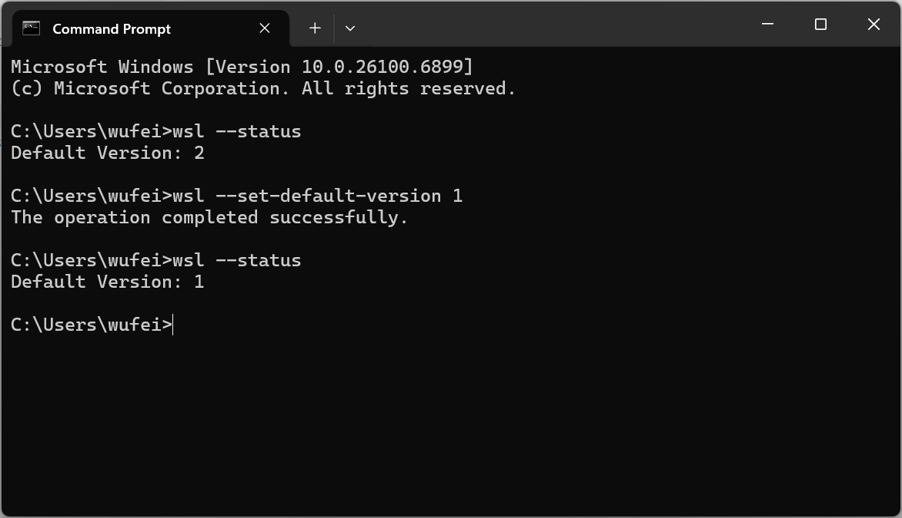
Setting up WSL 1.#
Install Ubuntu. Run
wsl --install -d Ubuntu.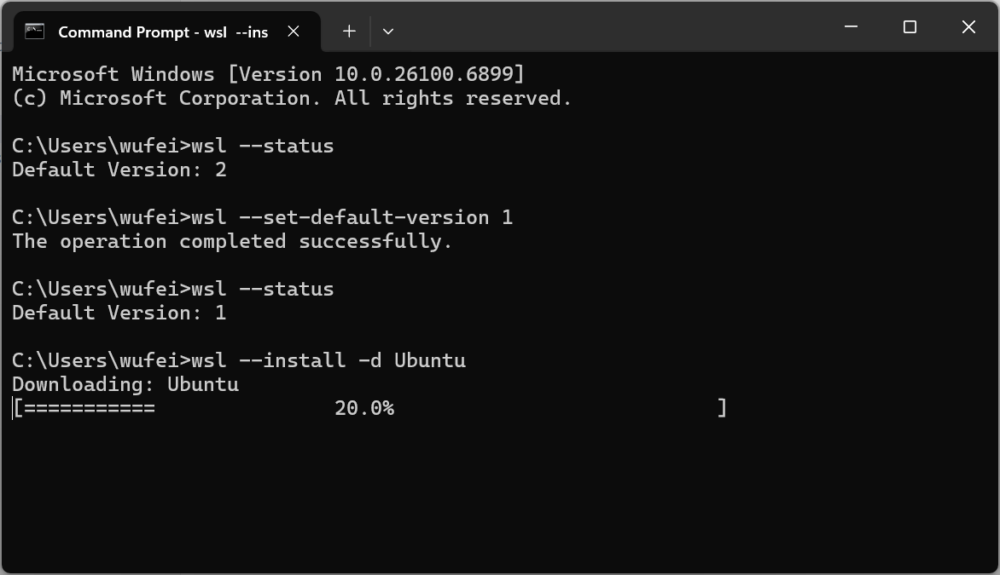
Installing Ubuntu.#
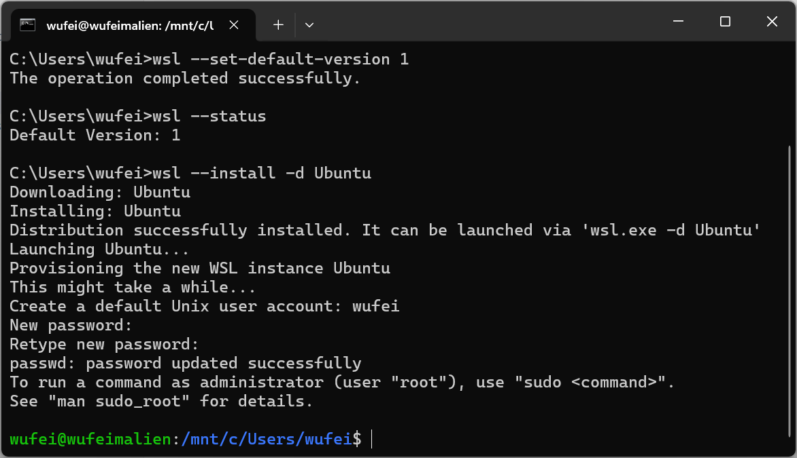
Installation successful.#
Set Up Build Tools#
Install cross-compile toolchain. Download and install the cross-compile toolchain for Linux from here. Choose the version according to your Unreal Engine version, e.g., download v23 for UE5.5. Verify the installation by running the command below. Reboot your computer after installation.
"%LINUX_MULTIARCH_ROOT%x86_64-unknown-linux-gnu\bin\clang++" -v
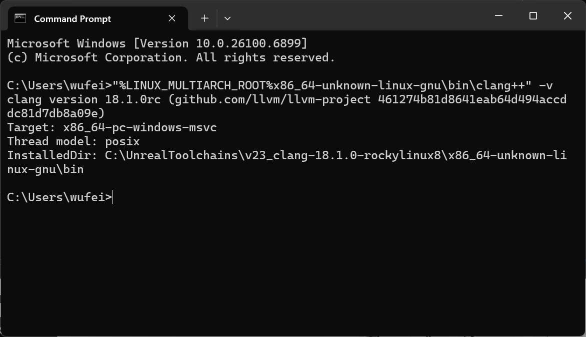
Cross-compile toolchain verification.#
Enable Linux as target platform in Epic Games Launcher.
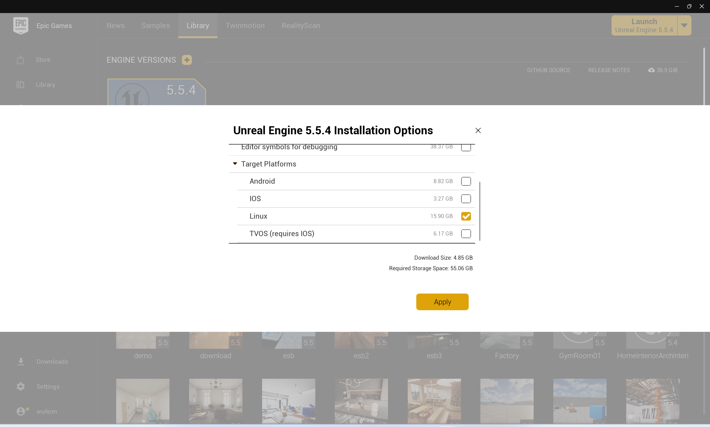
Enabling Linux as target platform.#
Modify Visual Studio installation to include Linux development with C++ workload.
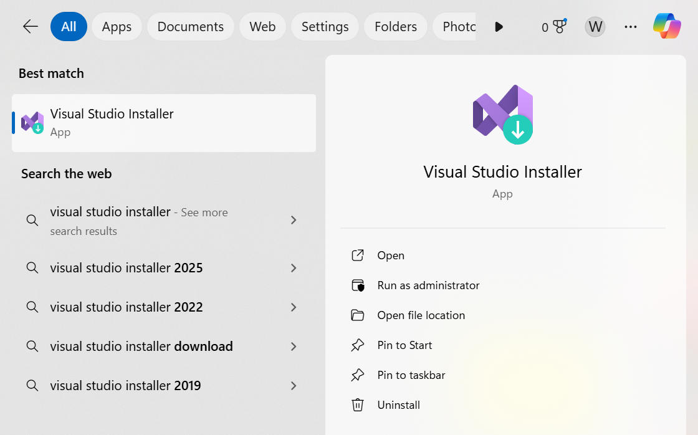
Visual Studio Installer.#
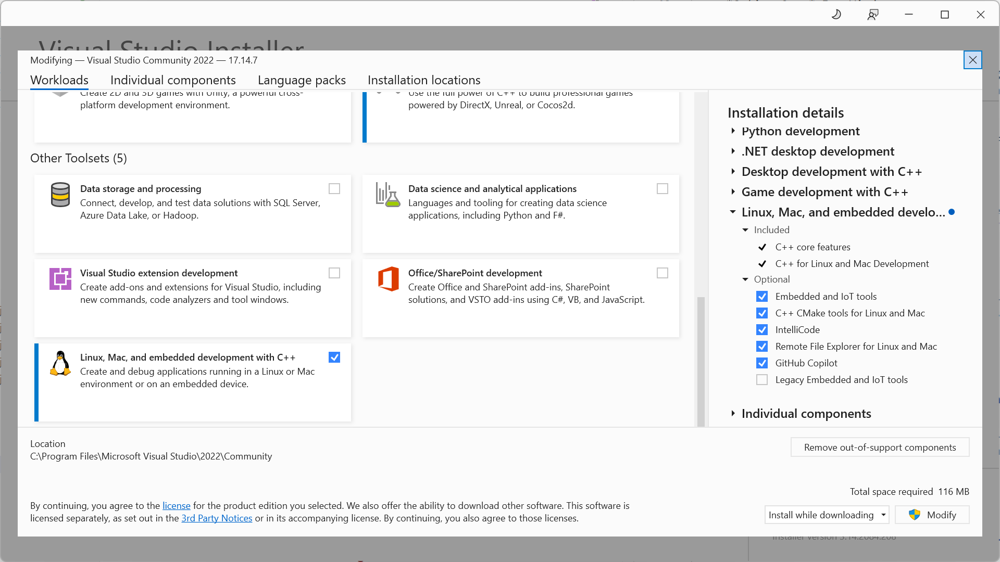
Include Linux development.#
Build the UE Project for Linux#
Set up the UE project. Follow this tutorial to set up a UE project with LychSim plugin. Import necessary scenes and assets.
Package the project for Linux. If you don’t see available SDK for Linux development, check the installation of your cross-compile toolchain. Also make sure you have rebooted your computer after installing the toolchain.
See troubleshooting for a known issue about failure of
UbaSessionServeron latest Windows updates.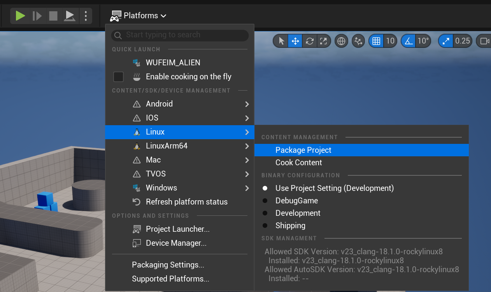
Packaging for Linux.#
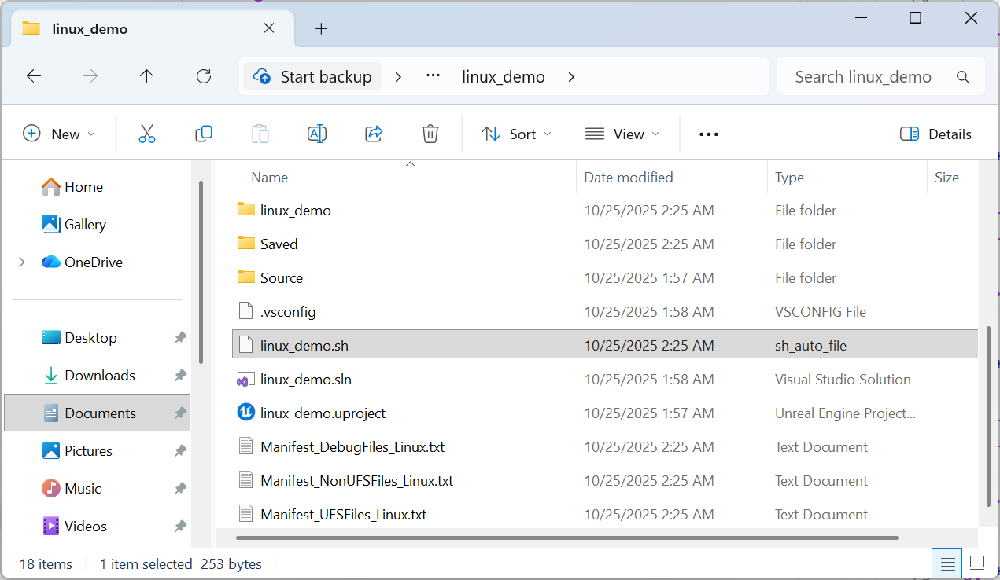
You should now see a launching script in your project directory or a subdirectory named
Linux.#
Run UE Project in WSL#
Locate the launch script. To test it in WSL, identify the path in Windows and in WSL. For example, if your launching script is located at
C:UsersusernameDocumentsUnreal Projectslinux_demolinux_demo.shin Windows, the corresponding WSL path would be/mnt/c/Users/username/Documents/UnrealProjects/linux_demo/linux_demo.sh.Identify the map name. From the
Project Settings -> Maps & Modesin Unreal Editor, you will find a list of maps that are available to launch from. Note the name of the map you want to launch. In this example, the map name isFirstPersonMap.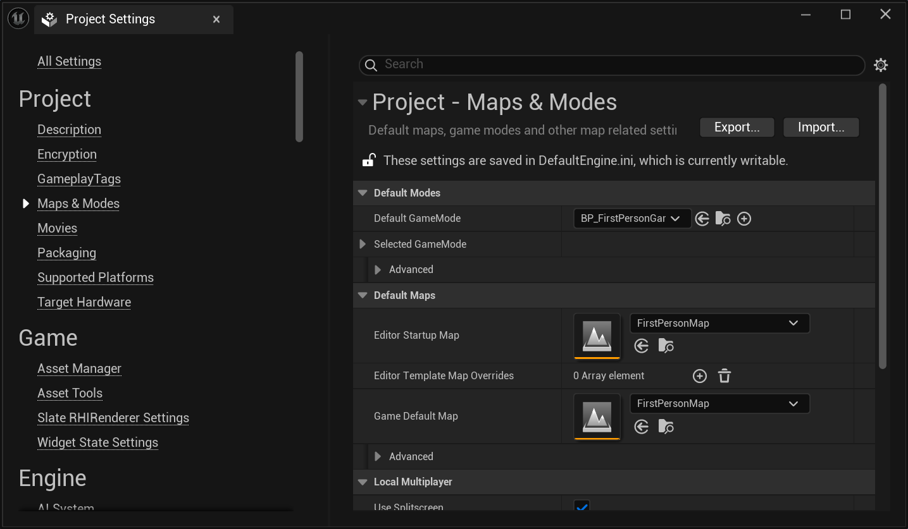
Map name.#
Run the script in WSL. Open your WSL terminal and navigate to the directory containing the launch script. Run the script with the following command:
linux_demo.sh "FirstPersonMap?listen" -port=7777 -nullrhi -nosound
-port=7777 specifies the port number for network communication.
-nullrhi disables rendering, which is useful for (1) quick tests, or (2) connecting from a UE game client.
-nosound disables sound processing.
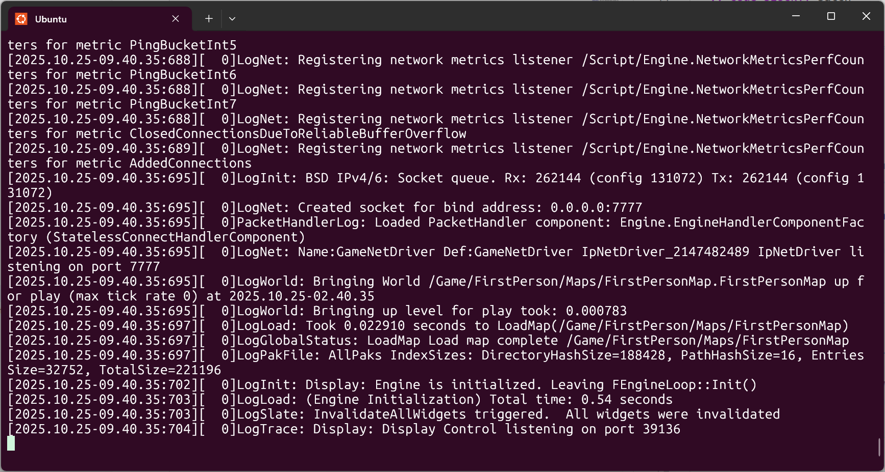
UE5 instance running in WSL and listening on port 7777.#
Connect to the UE instance from Unreal Editor. Open another WSL terminal and identify the IP address of WSL by running
ip addr show eth0. Use this IP address to connect to the UE instance from another terminal or machine.wsl hostname -I
Now play the game and then run the following command in the Unreal Editor console to connect to the UE instance running in WSL:
open 192.168.1.169:7777
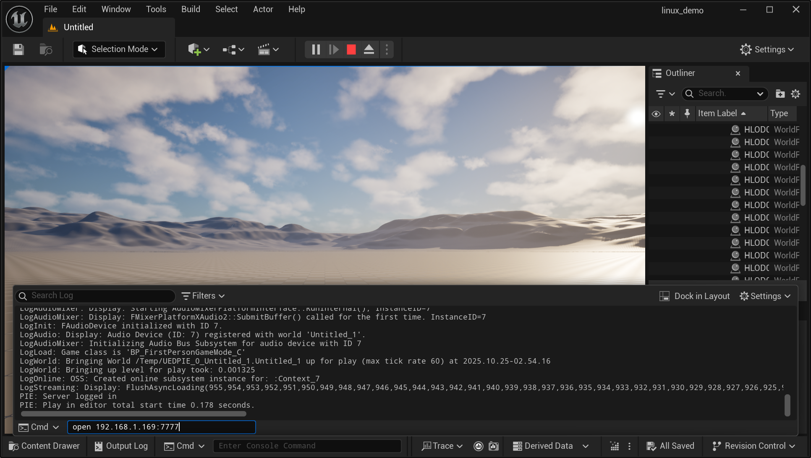
Connecting to the UE5 instance from Unreal Editor.#
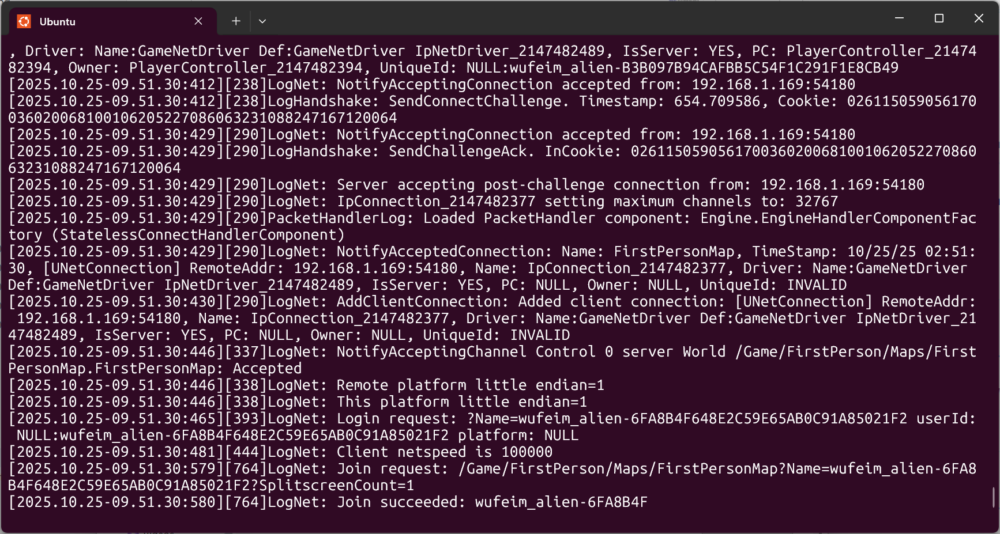
You should also see the connection log in the WSL terminal where the UE instance is running.#
Run UE Project in Linux Server with LychSim#
Transfer the packaged project to your Linux server. For example, you can use
scpcommand to copy the project files from your local machine to the server.scp -r C:\Users\username\Unreal Projects\server_demo\Linux username@your_server_ip:~/ue/server_demo
Connect to the Linux server and launch the script. Use the map name identified earlier to run the launch script on the server.
ssh username@your_server_ip cd ~/ue/server_demo chmod +x ./server_demo.sh ./server_demo.sh "FirstPersonMap?listen" -port=7777 -RenderOffscreen -vulkan -windowed -ResX=1920 -ResY=1080
-port=7777 specifies the port number for network communication.
-RenderOffscreen enables GPU rendering without displaying to a physical screen.
-vulkan specifies the use of Vulkan rendering API.
-windowed -ResX=1920 -ResY=1080 sets the windowed mode and resolution.
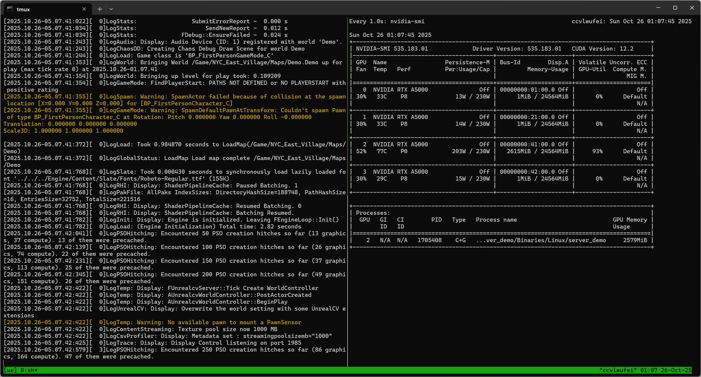
UE5 instance running on Linux server using GPU rendering.#
Enable remote access. If you want to run LychSim on local machine, enable remote access to port 7777 for UE instance and port 9000 for LychSim server.
sudo ufw allow 7777 sudo ufw allow 7777/tcp sudo ufw allow 9000 sudo ufw allow 9000/tcp
Now we can use LychSim by specifying the server IP and port number. For example, in Python API:
from lychsim.api import LychSim sim = LychSim(server_name='your_server_ip', port=9000)
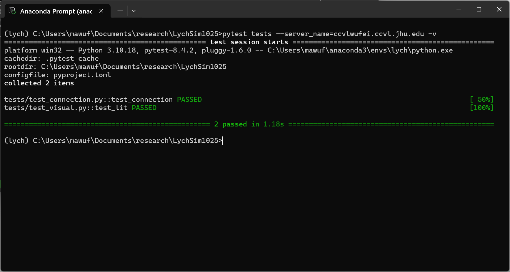
All tests passed successfully!#